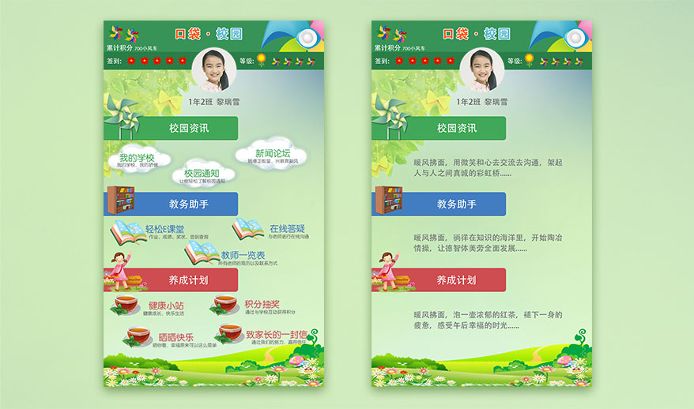
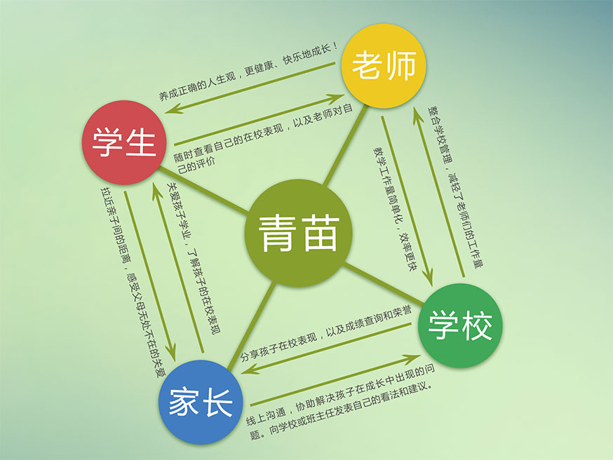

关于青苗·口袋小学APP
“口袋小学”是一款基于“一体化移动校园门户”为思想，以小学为平台的移动数字软件。这款软件可以实现在各类移动设备上浏览校园新闻、通知公告，可以实时转播校园文化，家长还可以通过手机查看学生课表、考试成绩、荣誉等一系列功能来关注学生德、智、体、美各封面的成长，为新一代学校数字化管理系统。
意 义
我们的宗旨
现在是互联网信息科技发展的时代，以往过去以短信的发送信息已经被淘汰。在市面上，这款“口袋小学”是唯一一款针对于小学量身定制的APP，教师和家长均为自愿使用，绝无硬性摊派，是一款绿色、安全、免费的APP。我们通过校园资讯、教务助手、养成计划等功能，让家长在线了解孩子的在校情况，同时提升教师办公效率，节省非教育实间，通过家长和教师自发性的使用这款软件，学校可以对两者进行良性的管理和引导，让家长亲近学校，提升老师管理水平，进而提升学校品牌。
我们的核心价值是通过收集大小学校的学生教师数据，通过分类换算，得出充满价值的核心参考数据。